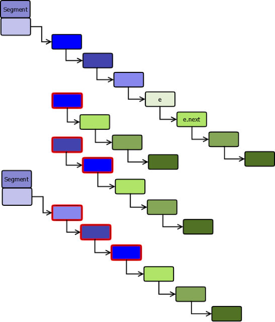

CopyOnWriteArrayList
Let us see how ArrayList and synchronized list behave when we have
concurrent read and write operations.
ArrayList won't allow concurrent read and write operations. If it is
structurally modified after the iterator is created, it will throw
ConcurrentModificationException, else we may see some stale data. They are
implemented by associating a modification count with the collection. If the
modification count changes during iteration, hasNext() or next() throws
ConcurrentModificationException. However, this check is done without
synchronization, so we can't guarantee it in multi-threaded task.
If we synchronize read and write operations, then traversing will become
slow as it will have to get the lock first. In concurrent applications where
traversals greatly outnumber insertions or removals, synchronized list may
not be the right implementation.

- In CopyOnWriteAarrayList, read operations are not synchronized as they
work on the snapshot of the internal array so multiple iterators can
traverse simultaneously without blocking each other (1, 2, 4).
- All write operations are synchronized. They work on a copy of the
backing array (3). Once the write operation is done, the backing array
is replaced with the copied one and the lock is released. The backing
array is made volatile so the the call that replaces array is atomic
(5).
- Iterators created after a write operation will be able to see the
modified structure (6, 7).
- The iterators returned by the copy-on-write collections do not throw
ConcurrentModificationException as they work on a snapshot of the array
and return the elements exactly as they were at the time the iterator
was created, regardless of subsequent modifications (2, 4).
So if iteration are far more frequent than modification,
CopyOnWriteArrayList is the right implementation to use.
ConcurrentHashMap
ConcurrentHashMap main motive is to allow concurrent access to the map.
HashTable offers synchronized access to the map but the entire map is locked
to perform any sort of operation.
In ConcurrentHashMap, the basic strategy is to subdivide the table among
segments so that the lock is applied only on a segment rather than the
entire table. Each segment manages its own internal hash table in size 2x
>=(capacity/no. of segments).
Locking is applied only for updates. In case of of retrievals, it allows
full concurrency, retrievals reflect the results of the most recently
completed update operations.
If we assume four threads are going to concurrently work on a map of initial
capacity 32, we would want the table to be partitioned into four segments,
each managing a hash table of capacity 8.
ConcurrentHashMap Data Structure would be:
For comparison sake, below figure shows the data structure of a HashMap.
Segment
The collection maintains a list of 16 segments by default, each of which is
used to guard (or lock on) a single bucket of the map. This effectively
means that 16 threads can modify the collection at a single time (as long as
they’re all working on different buckets). This level of concurrency can be
increased using the optional concurrencyLevel constructor argument.
public ConcurrentHashMap(int
initialCapacity, float loadFactor, int concurrencyLevel)
The maximum size it can go up to is 216. Greater the concurrency level,
greater would be the no. of segments and lesser the size of hash table that
the segment manages. Using a significantly higher value than you need can
waste space and time, and a significantly lower value can lead to thread
contention.
Put Entry
New Entry
ConcurrentHashMap doesn’t allow NULL values. The key cannot be
NULL, it is used to locate the segment index and then the actual bucket
within the segment. The key’s hash is re-hashed to strengthen the hash value
to defend against poor quality hash functions. This is important as the hash
will be used to locate both segment and hash table index. The upper bits
will be used to locate the segment index and the lower bits to locate the
table index within the segment. This is why re-hashing function is different
from that of HashMap as the hash bits need to be spread better to regularize
both segment and index locations.
private static int hash(int h) {
h += (h <>> 10);
h += (h <>> 6);
h += (h << 2) + (h <>> 16);
}
Put If Absent
ConcurrentMap offers new method putIfAbsent() which is similar to
put except that the value will not be overridden if key already exists. This
is equivalent to
if (!map.containsKey(key))
return map.put(key, value);
else
return map.get(key);
except that the action is performed atomically.
containsKey is not synchronized so the above code may cause unexpected
behavior. Lets look into the below scenario:
Thread A is trying to remove a key, calls remove(key), acquires lock.
Thread B tries to execute above code, calls containsKey(key). The key exists
as Thread A has not yet released the lock so the old value is returned.
Thread A removes the key and releases the lock.
The above scenario proves that the code is not atomic as it returned a key
which it thinks exists but actually doesn’t.
Also, performance wise it is slow, containsKey has to locate the segment and
traverse through the table to find the key. Method put needs to do the same
traversing to locate the bucket and put the value. The new method
putIfAbsent is a bit faster as it avoids double traversing. It goes through
the same internal flow as put, avoids overriding the old value if key
already exists and simply returns the old value.
Class Diagram
Below class diagram shows that ConurrentHashMap is made up of
Segments which in turn is made up of HashEntries.
Remove Entry
HashEntry is an immutable class so the next link can’t be adjusted.
All entries following removed node stays in the list, but all preceding ones
need to be cloned.
HashEntry newFirst = e.next;
for (HashEntry p = first; p != e; p = p.next) {
newFirst = new HashEntry(p.key,
p.hash, newFirst, p.value);
tab[index]= newFirst;
}

Re-sizing
Since power-of-two expansion is used, the elements from each bin
must either stay at same index, or move with a power of two offset.
int idx = e.hash & sizeMask;
For a capacity of 16 elements, sizeMask would be 1111 so the lower 4 bits of
hash will form the index.
When the capacity is doubled, sizeMask would be 11111 and now the lower 5
bits of hash will form the index.
So the index would be same if the 5th is 0 else the index would be
incremented by 24.
The trailing consecutive sequence nodes can be re-used instead of
unnecessary node creation if they point to the same slot after the
re-hashing. Here in the below example the trailing nodes in blue hues will
all end up in the same index.